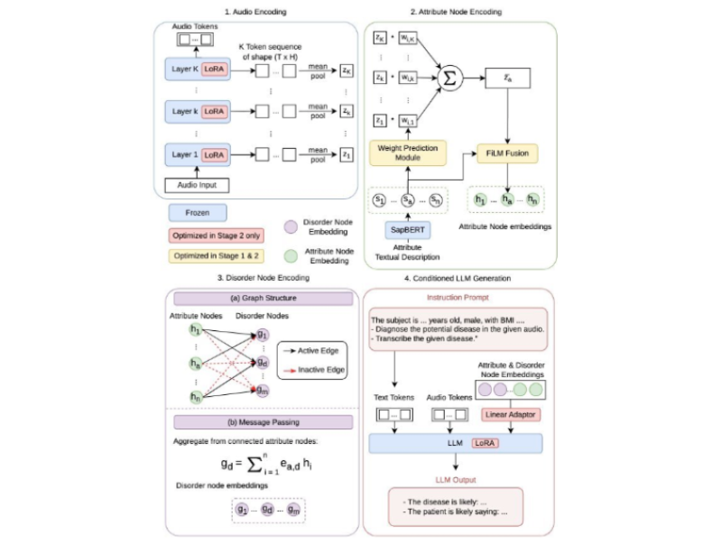
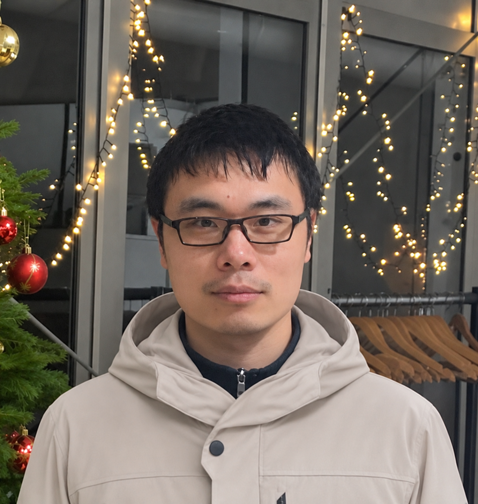
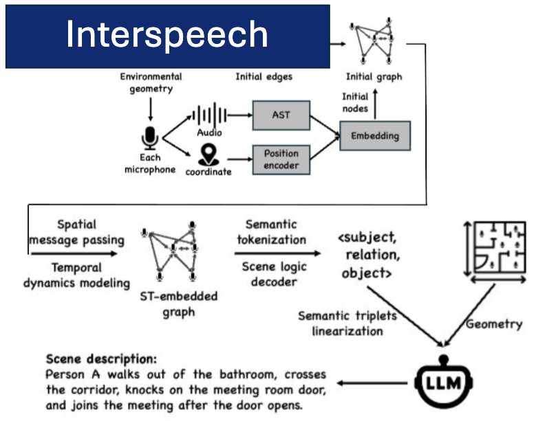
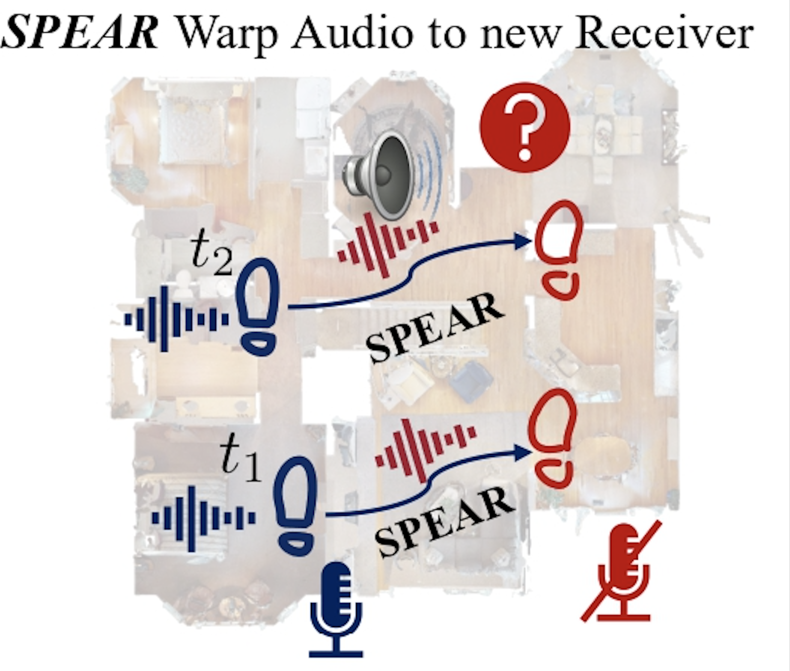
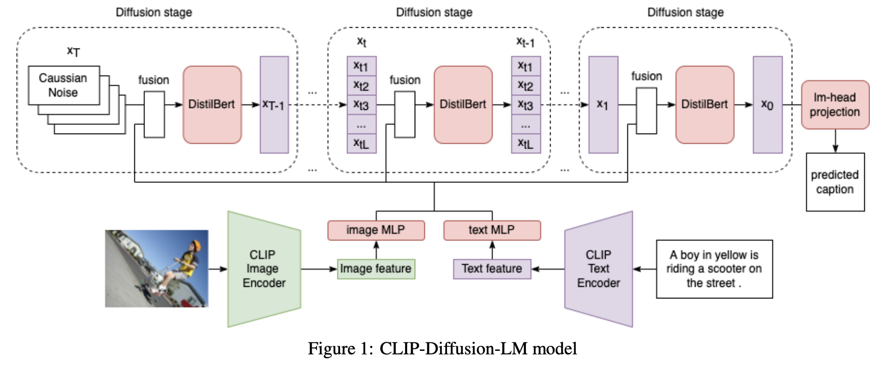

Shitong Xu
PhD candidate, University of Oxford
I am a fourth-year PhD candidate in Department of Computer Science at the University of Oxford, supervised by Prof. Niki Trigoni and Prof. Andrew Markham. I obtained my Master and Bachlor degree in Imperial College London, where I completed my Master thesis under the supervision of Prof. Ben Glocker.
Research Interests
My research lies at the intersection of Audio Signal Processing and Multimodal Machine Learning, with a focus on understanding the semantic and spatial properties of complex acoustic environments.
My research spans three interconnected directions:
- Semantic Audio Understanding: Robust speech and audio analysis in complex acoustic environments, including target speaker extraction and pathological speech detection.
- Spatial Audio Modeling: Sound source localization, spatially conditioned extraction, and spatial audio rendering under diverse acoustic and microphone configurations.
- Spatial-Semantic Scene Understanding: Integrating semantic and spatial information for higher-level acoustic scene understanding, including spatial audio question answering.
More broadly, I have deep interest in the following fields:
- Physics-Informed Machine Learning
- Electroencephalography (EEG) Brain Signal Processing

Research Experience

Interspeech
NeurIPS
Interspeech


Internship
Microsoft Research Asia, Research Intern
Mar 2026 - July 2026
Advised by Chang Xu, Zilong Wang
Mar 2026 - July 2026
Advised by Chang Xu, Zilong Wang
Cisco system, Software Engineer Intern
Apr 2022 - Sep 2022
Advised by Shubham Bakshi, Arthur Drozdov
Apr 2022 - Sep 2022
Advised by Shubham Bakshi, Arthur Drozdov
Education
University of Oxford
Oct 2023 - Present
PhD in Computer Science
Oct 2023 - Present
PhD in Computer Science
Imperial College London
Oct 2019 - Aug 2023
MEng (Integrated Bachelor's and Master's) in Computing
Graduated with First Class Honours
Oct 2019 - Aug 2023
MEng (Integrated Bachelor's and Master's) in Computing
Graduated with First Class Honours
Teaching Experience
Teaching Assistant, University of Oxford
Machine Learning (Oct - Dec 2023)
Deep Learning for Healthcare (Feb - Apr 2024)
Physics-Informed Machine Learning (Feb - Apr 2025)